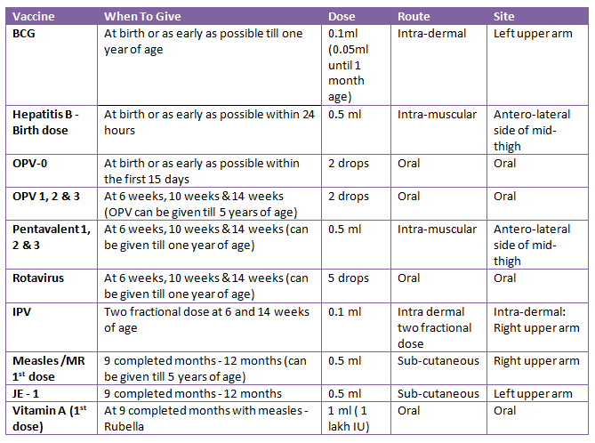

National Immunization Programme
Subject: Community Health Nursing I

Overview
National Immunization Programme
Background
A priority 1 initiative, the National Immunization Program (NIP) of Nepal (Expanded Program on Immunization) was established in 2034 BS. It is one of the Ministry of Health and Population's most effective public health initiatives, and it has made significant progress toward lowering the morbidity and mortality rates related to diseases that can be prevented by vaccination.
Major Activities Conducted in FY 2074/75
- Introduction of the rota vaccine and fIPV at the regional/provincial level and at the district level of health worker and vaccine providers.
- Urban health clinics, private/non-governmental healthcare facilities, and regional training programs on immunization and AEFI surveillance are available for health professionals.
- Verification, validation, and oversight of immunization data for the municipality Declaration program's long-term viability
- Examining the operation of immunization services, the sustainability of the Full Immunization Declaration partnership in towns with lower vaccination coverage, and local resource mobilization
- Assurance of complete immunization in 20 districts
- Meeting to discuss sustainable immunization program with lawmakers, decision-makers, the commercial sector, and civil society
- Review of the hygiene promotion through vaccination program at the district level orientation for local government micro-planning
- To ensure complete immunization and its sustainability, orientation or training should be provided to the head of the health facility, the mayor, and the ward secretary.
- Planning and introducing FCHVS to identify children who are difficult to contact and drop out for full immunization
- National Immunization Act of 2074 takes effect.
- System for electronic immunization registration review and expansion
- Conducting a district level account officer's financial cost-effectiveness analysis of the immunization service

Types of vaccine (immunizing agents)
- Definition of immunization
Immunization is the process of introducing live, dead, or weak organisms into a person's system in order to protect them from disease. - Definition of vaccine
A material called a vaccine is made from a disease-causing agent or its harmful byproduct and stimulates the creation of a particular antibody. Nepal uses vaccines for immunization. - BCG (Bacillus Calmette Guerin)
This vaccine was developed by French scientists Calmette & Guerin in 1906 AD. It was first administered to humans in 1921, and it was added to the WHO EPI in 1974 (www.who.int/biologicals/areas/vaccines/bcg/Tuberculosis/en/). This attenuated vaccination, which is derived from the mycobacterium bovis, stimulates the formation of antibodies against tuberculosis.
Types of vaccine: There are two types
- The liquid (fresh) vaccine and
- The freeze-dried vaccine.
Age:
- At birth or for the first year, BCG is best administered. If administered at the age of three months, BCG offers higher protection. A BCG injection is required as soon as possible, either at birth (for institutional deliveries) or at 6 weeks of age along with other immunizing agents like DPT, Hepatitis "B" (Combo Vaccine), and Polio.
- Early BCG administration offers high levels of protection, especially against the most severe form of childhood tuberculosis.
Dose: The usual dose is 0.05 ml.
Administration
- Injecting the vaccine intradermally with a tuberculin syringe or a 25 G/26 * G sterile needle and syringe is the recommended standard approach by the WHO.
- Single dose, right deltoid region, as the injection location, and (as soon as possible after birth).
- Antiseptic should not be used to clean the skin.
Reconstitution
- For infants younger than one year old, a vial of 20 doses (0.05 ml each) of BCG vaccine should be reconstituted with 1 ml of sodium chloride injection.
- Select a sterile mixing needle and a 1 ml syringe.
- Follow these instructions to break the ampoule off:
- Hold the ampoule with cotton or gauze between the thumb and index finger of your left hand.
- Support the ampoule neck's end with your index finger.
- Place the right hand's thumb and index finger with cotton in the axis of the ampoule.
- Gently sever
- Take the diluents out of the ampoule and place them in a syringe.
- Check the vaccine's label for the manufacture date, VVM, and expiration date.
- With an AD syringe, carefully inject the diluents into the vial after cutting off the vial's cap using aseptic technique.
- Invert the vial carefully a few times to resuspend the freeze-dried BCG.
- Before drawing the next dose, gently shake the resuspended vaccine vial.
- Use only the diluents the manufacturer supplies when reconstituting.
- Using the wrong diluents could harm the vaccine and/or cause severe responses in the vaccine recipients.
- Use right away following reconstitution.
- If the vaccine is not used right away, it should be kept in the dark at a temperature between 2 and 8 degrees Celsius for no more than six hours (1 immunization session).
- Within six hours of reconstitution, any unsealed vial that is still present after a vaccine session must be thrown away.
Method of administration
- Positioning the infant such that the mother can hold it and its right arm is unencumbered by any clothing
- Fill the syringe with 0.05 milliliters of vaccine by adding ADS (Auto disable syringe)
- Use cotton or dry cotton to clean the injection site.
- Inject the youngster by holding their right upper arm in your left hand, tucking your three fingers under the arm, wrapping your thumb and index finger around the arm, and pulling the skin between your thumb and forefinger.
- Prick the skin, then insert the bevel into the uppermost 2 mm of the dermis's superficial layers (almost parallel with the surface).
- An indication of a successful injection is a raised, fading bleb that displays the hair follicle tips.
- Now put your left thumb over the needle knob to hold it is position.
- Syringe plunger should be held between the index and middle fingers of the right hand, and the plunger tip should be pushed with the right thumb. Make sure there are no leaks from the syringe near the adaptor. Leave the injection site exposed rather than wiping or dressing it.
- Successful intradermal delivery is indicated by a wheal (a tiny, elevated swelling on the skin) measuring 5 mm at the injection site.
Phenomena after vaccination
- When the BCG vaccine is administered intradermally, a tiny hump forms in the skin. After 30 minutes, it automatically vanishes.
- After two weeks: An unsharpened pencil-sized red sore at the injection site develops.
- After another two weeks, the ache finally starts to heal.
- Healing takes place on its own in 6–12 weeks, leaving a small, round scar with a lifetime diameter of 2–10 mm.
- Lack of BCG Scar formation is a sign of insufficient BCG uptake.
- There is no need to revaccinate the infant even if the reaction does not occur or if the baby does not develop the BCG scar as recommended.
Protective value
- The national immunization program does not include vaccination since the length of protection is between 15 and 20 years.
- Safeguards against TB's more harmful variants.
- Prevents the recurrence of TB in older people.
- Does not stop TB from occurring.
- Hardly offers any defense against pulmonary TB.
- BCG is not advised for adults.
If the medication is administered subcutaneously, complications may result. In addition to swollen glands in the axilla or above the collarbone that may occasionally rupture and discharge, these injection-related problems. The vaccination site may experience an ulcer. It will recover on its own. The complications don't pose a threat.
Side effect
- Adenitis local (inflammation of gland)
- Abscess or swelling near the elbow or under the armpit (Axilla): Unsterile injection if large dose, S/C or IM.
- 5 per million doses cause a generalized infection, mostly in infants with HIV infection or those who have severe immune deficiencies.
- Spread the BCG Reaction starts with erythematous papule and superficial ulceration after 3-6 weeks and lasts for up to 2-3 months.
Swelling of glands or formation of abscess
- After receiving the BCG vaccine, a child's glands under the armpit or close to the elbow may occasionally swell up, or an abscess may form. Abscesses or swollen glands develop because:
- The use of an unclean needle or syringe
- Injected vaccine was overdosed
- Instead of injecting the vaccine into the epidermis of the skin, this was done.
Contraindication: - Not specific, but should not be given to the child with:
- Widespread eczema
- A healthy region of skin can be used to provide the vaccination for infectious dermatitis.
- Hypogammaglobulinaemia
- Inadequate or impaired immunity.
- Leukemia, generalized malignancy
- Immunosuppressive medications include corticosteroids and radiation.
Nursing management
- Use a clean, soft cloth to cover the sore spot.
- Keloid marks are left behind after it heals on its own.
- The ulceration shouldn't be treated with any oil or medicine.
- If an abscess or enlargement of the glands occurs, ask the parents to come back.
Polio
First tested in 1952, the first was created by Jonas Salk at the University of Pittsburgh.
- Monovalent OPV types 1 and 2 were authorized in 1961.
- Type 3 monovalent OPV was authorized in 1962.
- 1987: IPV with increased potency.
- Trivalent OPV is authorized in 1963.
- Inactivated vaccine, 1955 (salk)
Types
- Subcutaneous administration of the inactivated polio vaccine (IPV) (Salk type). It is not utilized in practice since it is less effective at containing epidemics and more difficult to produce. Immunity's duration is not known with precision.
- Albert Sabin discovered the oral polio vaccine in 1957. It is known as the Sabin type of OPV. It includes a live, attenuated virus that has been generated in a main monkey kidney or in a diploid cell culture from humans. It offers longer poliomyelitis protection than the Salk vaccination. It is a transparent pink or light liquid. It comes in a unique little dropper-capped plastic bottle. This vaccine is widely used all over the world.
- Contains 3 different vaccine virus serotypes. grown on Vero cells from monkey kidneys.
- For up to 6 weeks after receiving a vaccination, shed in feces.
- highly efficient in building poliovirus immunity.
- after one dose, 50% immune.
- after three doses, 95% immunity.
- Immunity is probably permanent.
- The vaccines don't contain preservatives, but they do contain trace amounts of the medicines neomycin and streptomycin.
- Children in all nations are at risk of catching polio as long as there is even one sick youngster.
Types of OPV
- Poliomyelitis type 1 and 3 oral bivalent vaccination
- Oral poliomyelitis tetravalent
Poliomyelitis type 1 and 3 oral bivalent- This vaccine is recommended for supplemental immunization against poliomyelitis (SIAS)
- used in children aged 0 to 5 to stop the spread of type 1 and 3 polioviruses in places still affected by the disease.
- The routine administration of this vaccination is not advised.
- This vaccination is also taken orally.
- Dose: 2 drops orally
- According to national policy, the routine poliomyelitis vaccination program should continue to use trivalent vaccines. In addition, both asymptomatic and symptomatic HIV patients should receive bivalent OPV vaccinations in accordance with established schedules.
- The vaccination is not recommended for people with primary immunodeficiency disease, a medication-induced immune response suppression, leukemia, lymphoma, or generalized malignancy.
- Trivalent Polio Vaccine
- At least three oral dosages
- Vaccination schedule: at six, ten, and fourteen weeks of age, with a minimum four-week interval between shots.
- Dose: 2 drops orally
- Because most cases of polio occur between the ages of 6 months and 3 years, it is crucial to finish vaccination before 6 months of age.
Storage
- At -20°C, stabilized OPV can be stored for a year without being used (in freezer).
- The product can be kept in a refrigerator (between +2°C and 8 deg * C) after defrosting for six months.
- The OPV bottle shouldn't be frozen while it's being administered at the immunization clinic; instead, it should be kept in ice.
- Although storage of the vaccine in plastic tubes with dry ice may cause color changes, the quality of the vaccine is unaffected.
- Multidose vials should be stored between 2°C and 8°C after opening. OPV multidose vials may be used for up to 4 weeks after one or more doses of the vaccine were removed during an immunization session.
Administration: The OPV comes in two kinds of containers:
- A miniature plastic dropper-shaped bottle
- A glass vial in a plastic bag with a cover and a dropper.-
- The container needs to be shaken lightly at first to prevent foaming but vigorously enough to mix the contents evenly.
- If the container is a glass vial, take out the rubber and metal cups, tear the plastic bag to get the dropper out, and put it inside the vial before setting the vial and dropper in an ice-filled cup.
- Before administering a DPT-Hep B injection, give children polio drops.
- Allow the mother to firmly grasp the infant when he is on his back.
- To make the child's mouth open, gently squeeze his or her cheeks between your fingers to make their lips point forward, or pinch their nose.
- Directly applying 2 drops of the vaccine to the child's tongue from the dropper.
- To avoid contaminating the multidose dropper with saliva, the dropper should not touch the mouth.
- Watch out for the kid's swallowing. Give him another dose if he spits it out (discharges).
- Keep in mind that nursing is permitted both before and after giving OPV. But for around 30 minutes following the vaccination, hot water and other hot liquids should be avoided.
Protection: It is unknown how long the OPV's produced immunity will last. It might even last a lifetime.
Contraindication
- Acute illness that is moderate or severe.
- Severely dehydrated and dysentery
- Severe adverse reaction to a vaccine ingredient or after receiving a vaccination dosage previously.
- Suffering from severe cancer, leukemia, or lymphoma. corticosteroid recovery
- Primary immunodeficiency illness or immunosuppressive drugs. reaction from
Special care
- A second dose may be administered if vomiting or diarrhea occur during or right after administration, provided that the symptoms have subsided.
- According to national policy, it may be advised to delay immunization in the event of fever or an acute illness. The routine administration of this vaccination is not advised.
Side effects
- Fever, rigors, asthenia (weariness), myalgia (muscular discomfort), and arthralgia are all common symptoms (articular pains).
- There have been a few isolated reports of neurological problems such as parasthesia (tingling), neuritis (nerve inflammation), and myelitis (inflammation of the spinal cord).
- Pentavalent vaccine against DPT (diphtheria, pertussis, tetanus) plus hepatitis B and Hib (haemophilus influenza type b).
Triple vaccination against diphtheria, whooping cough, and tetanus is known as DPT. The diphtheria toxoid's efficacy is increased by the pertusis component of DPT. The vaccination is tetravalent (DPT+Hep B). Pentavalent (DPT+Hb+Hib) vaccination has been a part of the standard immunization schedule since 2009.
Age: The first dose should be given at 6 weeks; the second and third doses should be given at intervals of 4 weeks (6 weeks, 10 weeks and 14 weeks). It must be given a maximum of one year.
Site: The antero-lateral thigh of the left leg is where the pentavalent vaccine is administered deep intramuscularly.
Dose: A first immunization with three doses of 0.5ml is sufficient.
Pentavalent vaccine booster: At the age of 15 to 18 months, a booster dose of the vaccine may be administered.
At age 5, a reinforcing injection of the pentavalent vaccination should be given. The booster dose is not used in Nepal. Pentavalent vaccines shouldn't be frozen during storage. If the vaccine was frozen, throw it away. They should be kept in a refrigerator between 2 and 8 degrees Celsius. Additionally, transportation should be done between 2 and 8 degrees Celsius. The conjugate vaccine for diptheria, pertussis, tetanus, hepatitis B, and haemophilus influenza type b is believed to be effective in preventing hepatitis caused by the delta agent but ineffective in preventing hepatitis caused by viruses A, C, and E.
Administration
- Verify the label to make sure the dosage is correct, the product is not expired, and the VVM is still usable.
- Shake the vial to thoroughly blend the contents. Uneven mixing is a bad sign. It is best to throw away frozen vaccination.
- Take off the cap iv) Place the vial in an ice cube or ice pack on the table with the vial upright.
- Use an automatic disable syringe (ADS) (0.5ml)
- Shake vigorously before using.
- Fill the syringe with 0.5 ml of the vaccination.
- Choose the location (the upper outside quadrant of the child's mid-thigh is the optimum position).
- Place the infant on the mother's lap and instruct the caregiver to grasp the infant's right leg with the thumb and middle finger of the right hand while placing the index finger between the infant's right and left ankles to help lock both legs.
- Place your thumb and finger on either side of the injection site.
- Stretch the skin between your finger and thumb so that it is flat.
- Inject the vaccine by pressing the plunger's top with your thumb.
- Remove the needle and press dry cotton against the injection site. Avoid rubbing the area.
Side effects
- Localized urticaria, rash, discomfort, swelling, warmth at the location, and induration with or tenderness. without
- Some people may experience a systemic reaction such a headache, nausea, or weakness. fever,
- Shock from anaphylaxis convulsion
- The majority of the time, the systematic adverse effects vanished on their own 48 hours following the immunization. cases
- Although the Hib vaccine is very well tolerated, localized responses can happen up to 24 hours after administration, causing discomfort and tenderness at the injection site.
- The majority of these reactions are moderate and brief.
- Most of the time, they spontaneously disappear within two to three days, necessitating no more medical intervention.
- Following injection of the Hib vaccine, mild systemic responses, including fever, are quite rare.
Abscess: A week or longer after receiving a DPT injection, an abscess may form. This is feasible because:
- The use of an unclean needle or syringe
- The muscle wasn't given an injection with the vaccine.
Contraindication
- Severe illness requiring hospitalization
- A past severe reaction to any vaccine component or in children who had previously received the pentavalent vaccination and displayed hypersensitivity.
- Children with an acute febrile illness should wait to have their vaccinations.
- There are only a few conditions that make the pertusis component contraindicated for the first dosage of DPT, such as fits, aberrant cerebral signals during the newborn period, or other severe neurological abnormalities. In this situation, DT should be administered in place of DPT and Hep B and Hib vaccinations should be administered separately rather than as a combined vaccine.
- People with active or past hepatitis B virus infections won't experience any negative effects from the vaccine.
Precautions
- All known precautions should be followed before receiving any vaccination in order to prevent negative side effects. Reviewing the parent's medical history with regard to potential sensitivities and any prior adverse reactions to the vaccine or similar vaccines is part of this process.
- Previous immunization records, current health status, and knowledge of the research on the application of the vaccine in question.
- Children who are immunosuppressed might not react.
- Before administering the pentavalent vaccine, medical professionals should discuss the advantages and risks of immunization with the child's guardian and ask about the child's most recent health status.
- It is important to inform parents of a child with a family history of seizures that their child is more likely to experience seizures after receiving DPT and to provide guidance on how to handle a seizure if it does occur.
- It is important to take extra precautions to prevent the injection from going into a blood vessel.
Nursing management
- If the fever does not go down within 36 hours or if vomiting intoxication occurs, ask the parents to come back.
- If convulsion occurs, we should determine the cause and avoid administering the Pertussis vaccine in the future.
- It is important to inform parents of a child who has a history of seizures that their child is more likely to experience seizures after receiving DPT and to provide guidance on how to treat them should they occur.
- Due to the lengthy incubation period of hepatitis B (up to six months or more), vaccination may not be effective in people who have already been exposed to the virus.
Hepatitis B
Hepatitis surface antigen-related protein makes up the Hepatitis "B" vaccination. The vaccine is a suspension of HbsAg particles that have been inactivated and absorbed with alum. As of the tenth five-year plan, the national EPI program includes the hepatitis "B" vaccine. The government of Nepal's child health division has now made the Hepatitis "B" vaccine available in 75 districts.
Types: There are now two vaccination kinds available:
- I Plasma derived: A subunit vaccination made from pooled plasma from HBV carriers contains surface antigen. This vaccination has a good safety record, and it works well.
- Recombinant hepatitis B vaccine: These are methaylotropic yeast pichia pastoris cells that have been genetically modified to carry the genes that encode for the main surface antigen of the HB virus.
With seroconversion rates of 96% recorded after 3 doses, both vaccines are very immunologic.
Age: The first dose of Hepatitis "B" is given at 6 weeks, the second dose is given at 10 weeks, and the third dose is given at 14 weeks, according to the EPI program.
From birth on, the vaccine can be given to everyone. Subjects who are or will be at an elevated risk of contracting the hepatitis B virus should get vaccinated. These consist of:
- Health professionals
- Patients who frequently get blood transfusions or clotting factor concentrates, including those with hemophilia, sickle-cell anemia, thalassemia, and oncology units.
- People whose sexual habits put them at higher risk.
- Addicts of injectable drugs.
- Travelers and their close contacts in high endemicity regions.
- Household members of those in the aforementioned groups as well as those who have either an acute or chronic hepatitis B infection.
- Babies born to carriers in their mothers.
- Given that the majority of the population is at risk of contracting hepatitis B, immunization should be made available to all young infants and newborns as well as to adult high risk groups.
- Long-term hepatitis B vaccination is anticipated to decrease not just the general incidence of the disease but also its chronic consequences, including cirrhosis and chronic active hepatitis. Furthermore, it might lower the prevalence of primary hepatocellular cancer.
- Since hepatitis D (produced by the delta virus) cannot develop in the absence of hepatitis B infection, it is reasonable to assume that hepatitis B immunization will also protect against hepatitis D. This vaccine won't shield you from infection brought on by other agents, like the hepatitis A virus or the hepatitis C virus other viruses known to infect the liver.
Doses
- Up to age 10, 0.5ml is the typical dose. Since Flagun 2062, 75 districts have used the WHO-combined DPT and Hepatitis "B" vaccine, known as pentavalent.
- Adults and older kids should use ml(20mcg).
This initial vaccination series offers protection for a number of years.
Intramuscular route
Site
- Babies' anteromedial mid-thigh
- In mature deltoid muscle
Pentavalent vaccination administration:
[Hepatitis "B" vaccines are also available for prophylaxis in adults and other children. Vaccinations should be given at ages 0, 1, and 6 months. Booster doses may be administered after 3-5 years, although they are not typically advised because the three doses provide protection for an acceptable 3-5 years. years.]
Measles
A live attenuated measles vaccine can be made from human diploid cells or chick embryos. The vaccine is delivered as a freeze-dried product that must be reconstituted before use.
Storage: It has a two-year shelf life at 2-8°C.
Age: The WHO-EPI program recommends waiting until children are between 9 and 12 months old. Natural antibodies the baby receives from the mother protect it before 9 months, and after 12 months there is a risk of infection.
0.5ml subcutaneously is the dosage.
Reconstitution
- Vial with 10 doses (0.5ml/dose) of the measles vaccine that must be reconstituted with diluents in 5ml.
- To resuspend and freeze the measles, carefully turn the vial over down several times.
- With cotton or gauze, hold the ampoule between the thumb and index finger of your left hand. • Insert the cotton from the other hand's thumb and index finger into the ampoule's axis.
- Gently crack the ampoule's top.
- Draw the diluents into a syringe from the ampoule.
- Verify the vaccine's label, manufacture date, VVM, and expiration date.
- With aseptic technique, cut off the vial's cap, then carefully inject the diluents inside.
- Use only the diluents the manufacturer supplies when reconstituting.
- Incorrect diluent use has the potential to harm the vaccine and/or cause major side effects in people who get it.
- Use right away following reconstitution.
- If the vaccine is not used right away, it should be kept in the dark between 2 and 8 degrees Celsius for no more than six hours (1 immunization session).
Administration
- The right upper outside quadrant of the thigh muscle is the injection location.
- On the mother's lap, place the infant facing the right leg. similar to getting the DPT shot, ask to hold the infant.
- Subcutaneously inject the needle at a 45° angle while controlling it by holding the syringe's adapter steady with your thumb and index finger.
- Remove the needle, then apply dry cotton to the area.
Protection: Immunity appears 11–12 days after vaccination and lasts for longer stretches, possibly for the rest of one's life.
Side effects
- Joint discomfort: 25%
- Local response (pain, swelling, redness)
- Fever 5 \%-10\%
- Febrile convulsion
- Rash: 5%: After 6–12 days, a rash may appear. However, the rash won't spread to other people and it will disappear.
Contraindication
- Infants younger than 6 months ii) Acute illness, acute tuberculosis
- AIDS is an immune-deficiency illness.
- Hypogammaglobulinaemia
- History of allergies, eczema, and convulsions
- Pregnancy
- The use of steroids or other immune-suppressing medications
Nursing management
- If a rash might appear, give extra fluids and regulate your fever.
Measles and Bubella (MR)
The Wistar RA 27/3 rubella virus and the Edmonston-Zagreb measles virus are used to make the vaccine. Human diploid cells are used to propagate the measles and rubella viruses. The vaccine is given with diluents and is freeze-dried. The thing looks like a dry, yellowish-white cake.
age: nine months have passed (Same age as measles)
dose of 0.5 ml
location: mid-right lateral thigh
Method: Subcutaneous
Administration
- Similar to measles
- A gentle shake will quickly dissolve the dried cake.
- Utilize the vaccination right away after reconstitution.
- The vaccination should be kept in the dark at 2 to 8°C for no more than six hours if it is not used right away.
- Within six hours of reconstitution, any opened container that is still present at the end of a session needs to be thrown away.
- The included diluents are intended specifically for use with the vaccination. The vaccination can only be reconstituted using these diluents. Diluents from other vaccination types should not be used to dilute MR vaccine produced by other manufacturers. This cannot be accomplished with water intended for injection. When diluents are used improperly, the vaccine may be harmed or recipients of the vaccine may experience severe reactions. Diluents must not be frozen but should be kept cool.
- Prior to administration, the diluents and reconstituted vaccine should be visually inspected for any foreign particulate matter and/or changes in physical characteristics. Throw away the diluents or reconstituted vaccine if either is noticed.
Adverse reactions
- The nature and frequency of severe adverse effects are similar to those reported separately for the measles, mumps, and rubella vaccines.
- Within 24 hours of vaccination, the measles vaccine may produce temporary mild pain and tenderness at the injection site.
- They often resolve on their own within two to three days without the need for additional medical care.
- In 5–15% of vaccine recipients 7–12 days after vaccination, a brief fever that lasts one to two days can develop.
- About 2% of patients develop rashes, which typically begin 7–10 days after immunization and remain for two days.
- The moderate side effects of a measles-containing vaccine are less common after the second dosage and usually only affect people who weren't protected after the first dose.
- Approximately one instance of encephalitis has been documented following measles vaccination for every million doses given, while a direct relationship cannot be established.
- Typically, 1 to 3 weeks following the vaccine, symptoms start and persist 1 to 2 weeks. These temporary effects seem to only affect non-immune people, for whom the vaccine is crucial.
- In female adolescents and adults, the rubella component may frequently cause joint symptoms, such as arthralgios (25%) and athritis (10%), which typically last from a few days to two weeks. However, these negative reactions to the MR vaccine are extremely uncommon in both children and men (0%–3%).
Contraindication
- It's possible that those using corticosteroids, immunosuppressive medications, or getting radiotherapy won't have the best immunological response.
- The vaccine should not be administered to people who are febrile, pregnant, have acute infectious diseases, leukemia, severe anemia, or other serious blood system diseases, have severely impaired renal function, have decompensated heart diseases, have recently received gammaglobulin or blood transfusions, or who may be allergic to any of the vaccine's ingredients.
- Neomycin traces could be present in the vaccination. Neomycin-induced anaphylaxis or anaphylactoid reactions, as well as a history of such events, are categorically contraindicated.
- Minimal fever Diarrhea, mild respiratory infections, and other minor illnesses shouldn't be ruled out. It is especially crucial to immunize kids against malnutrition.
- Due to a hypothetical but never proven teratogenic risk, pregnant women should not receive the MR vaccine. Receiving the MR vaccination inadvertently while pregnant is not cause for an abortion. Since the MR vaccine is advised for adults, if pregnancy is intended, one month should pass following the MR vaccination.
- Immunoglobulins shouldn't be given within the first two weeks following vaccination for the same reason.
- Following immunization, individuals who previously tested positive for tuberculosis may eventually test negative.
MMR (Measles, Mumps and Rubella)
Measles, mumps, and rubella are all included in the trivalent MMR vaccination, which is a freeze-dried vaccine. This vaccination is alive. A live, attenuated strain of the measles virus is used in its preparation.
Sterile water for injections is the diluent.
Storage: The vaccine and its reconstitution should be kept between 2 and 8 °C in a dark place. Additionally, the vaccination needs to be shielded from light. a recommended temperature of 20°C for long-term preservation. The diluents should be maintained cold rather than freezing.
Dosing: 0.5 ml
Site: For toddlers, left/right lateral mid-thigh; for adults, upper arm.
Deep subcutaneous is the route.
Administration
- The vaccination should be administered right away after reconstitution.
- The vaccination should be kept in the dark at 2 to 8°C for no more than six hours if it is not used right away.
Prior to administration, the diluents and reconstituted vaccine should be visually scrutinized for any foreign particle matter and/or changes in physical characteristics. Discard the diluents or reconstitute the vaccine if either is noticed.
Age: MMR is given at least three months after the primary measles immunization, around 12 to 15 months of age. It is recommended for simultaneous active immunization against measles, mumps, and rubella infections in children aged 12 months to 10 years.
The rubella vaccine should not be administered within six weeks, and if at all possible, three months, of receiving an injection of immunoglobulins or a blood product containing immunoglobulins due to the risk of inactivation.
Side effects
- Within 24 hours of vaccination, the measles vaccine may produce temporary mild pain and tenderness at the injection site. They typically go away on their own without further medical intervention in two to three days.
- In 5–15% of vaccine recipients, a minor fever can appear 7–12 days after vaccination and continue for one–two days.
- About 2% of patients develop rashes, which typically begin 7–10 days after immunization and remain for two days.
- The mild side effects of the measles-containing vaccine are less common after the second dose and usually only affect people who did not receive the first dose of protection.
- There have been reports of encephalitis after measles vaccination at a rate of about one case per million doses given, though a causal relationship has not been established.
- Parotitis and low-grade fever could be brought on by the mumps component. Orchitis and febrile seizures might also happen.
- However, aseptic meningitis has been documented very infrequently, and significant fever is an uncommon occurrence.
- Meningitis brought on by a vaccination goes away on its own in less than a week without leaving any lasting effects. 15–35 days after vaccination, aseptic meningitis is a common complication.
- Female adolescents and adults who have the rubella component are more likely to experience joint symptoms such as arthralgias (25%) and arthritis (10%), which typically range from a few days to two weeks.
- However, these negative effects are extremely uncommon in children and men receiving the MMR vaccine (0%–3%).
- Typically, 1 to 3 weeks following the vaccine, symptoms start and persist 1 to 2 weeks.
- Common symptoms include low-grade fever and rash, lymphadenopathy, myalgia, and paraesthesiae.
- Less than 1 occurrence of thrombocytopenia has been documented for every 30,000 doses delivered.
- Similarly uncommon are anaphylactic responses.
- In the event of neomycin hypersensitivity, use with caution.
Contraindication
- Women should be advised not to become pregnant for 27 days following measles, mumps, or MMR vaccine.
- Leukemia and other cancerous conditions
- Serious febrile illnesses
- 3 months before the vaccination and one and a half to three months after the vaccination, corticosteroid, radiation, gamma globulin, and cytostatic drug therapy is prescribed.
- Egg protein hypersensitivity is known to exist.
- Past experience with febrile convulsions or GNS impairment.
Japanese encephalitis
Nepal began using the Japanese encephalitis vaccination in 2005/006. There are two varieties of vaccinations against Japanese encephalitis;
- Live attenuated: SA-14-14-2, a live attenuated vaccine generated on a monolayer of hamster kidney cell cultures, is the only vaccine currently available in Nepal for childhood immunization. After cultivation and harvest, the viral suspension is appropriately stabilized before being lyophilized. The item has the appearance of a crisp, pale yellow cake. It should reassemble into a transparent, orange-red, or light pink color. The standard immunization process involves this vaccine.
- Inactivated: The Japanese encephalitis vaccine is an inactive (killed) vaccine made from the brains of nursing mice and is a colorless or whitish turbid suspension. In 1954, it all began in Japan. This vaccination is given to people in epidemic areas who are at high risk.
13 to 23 months old, in good health
For the purpose of preventing Japanese encephalitis.
Location: mid-right lateral thigh
Dose of 0.5 ml
Subcutaneous route
Administration
- Before using, shake the container well after reconstituting the freeze-dried vaccine with the enclosed vaccine diluents according to the stated value.
- The vaccine should not be used until it has fully reconstituted.
- Stretch the area with your left two fingers and administer the vaccine by making a 45° angle with the needle.
- Using a dry cotton pad, gently press the vaccination site.
Side effects
- Within 24 hours of the immunization, pain and discomfort at the injection site are possible; in most cases, these symptoms go away on their own within 2-3 days.
- Generally speaking, after 1-2 weeks post immunization, transient fevers can happen. The majority of these are moderate and go away on their own within 1-2 days without special care. The receivers should rest and sip extra boiled water as necessary. It is important to take precautions to stay warm and avoid subsequent illnesses. Patients who have moderate fevers or fevers that last longer than 48 hours may benefit from physical therapy or symptomatic care.
- After vaccination, sporadic rash can occasionally appear, but typically no special care is required. If necessary, symptomatic treatment might be beneficial.
Extremely rare adverse reactions
- After receiving a vaccination, anaphylactic shock could happen within an hour. The recipients who are experiencing anaphylactic shock must obtain rapid medical attention. include an immediate adrenaline shot.
- Allergic purpura: Patients with allergic purpura must visit the clinic right away and receive corticosteroid antianaphylactic treatment on time. Purpuric nephritis may become complicated if the appropriate or timely treatment is not received.
Contraindication
- Previous reaction history
- Acute infection, renal or hepatic disease, cardiovascular disease,
Things to remember
© 2021 Saralmind. All Rights Reserved.
 Login with google
Login with google
 Login with facebook
Login with facebook